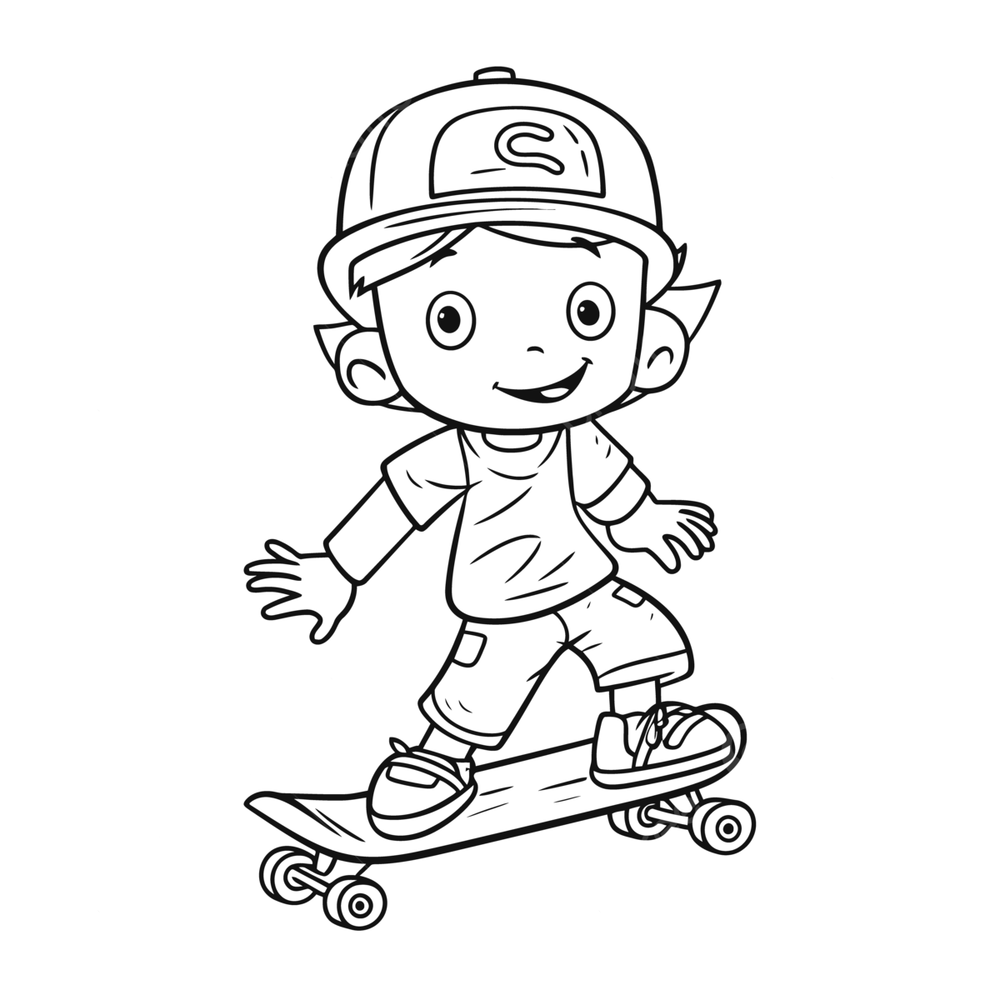
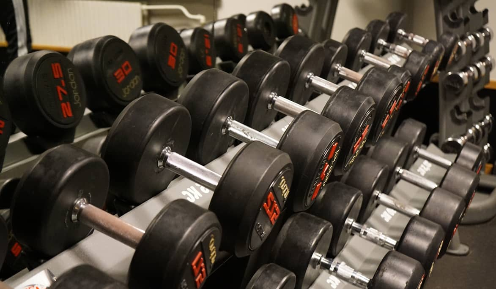
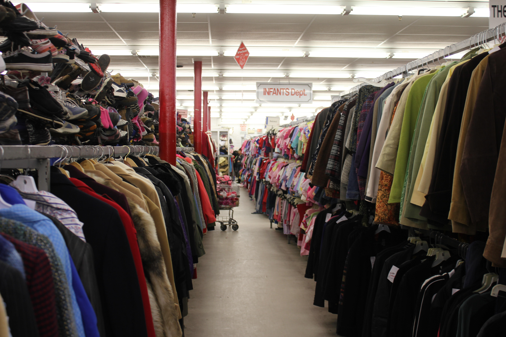

Hobbies
Skateboarding
For me skateboarding has been such a blast since the day I picked up my first board. Through skateboarding I've got meet a lot of amazing people. Skateboarding has also taught me a lot about myself. I've learned how strong I truly am. When I first started I could barely even skate down a hill without bailing into the grass the second my board got fast. Now a couple years later I'm at the skatepark hitting ollies and crushing the bowl. Skateboarding though ultimately has taught me the importance of hardwork and how necessary it is to achieving one's own goals. That sensation of landing a new trick after countless days of failing is what makes skateboarding so amazing to me.
Working out
Although I only recently picked up this hobby its been a blast so far. I've got to meet so many new people on my gym journey. At first working out was a real challenge for me because of my lack of discipline and motivation. But after forcing myself to be consistent it eventually became easier and easier to get up out of bed and head to the gym. Working out has really taught me how powerful and necessary discipline can be. Without it I don't think I would've ever been able to see myself grow physically and mentally.
Thrifting
Thrifting is by far my favorite hobby. It just one of the perfect things to do with your friends on a nice afternoon. Then when you finally find that one vintage piece you've been hoping for its feels exhilarating. Another reason I love it is because of how much more expressive a lot of these vintage pieces are in comparision to more modern piece of clothes. Its allowed me to really branch out my style and create a more expressive wardrobe that I can feel comfortable in. On top of that its just an easy way to save some money and give some new life to some old but beautiful pieces of clothes.
Video Games
Ever since I was little I can remember sneaking off late at night to my family computer to play whatever new game I found. I've always had this innate love for gaming because of how intriguing the worlds I get transported to can be. On top of that getting to experience these virtual worlds with my brothers or friends made gaming that much better.